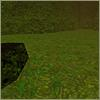
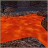
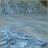
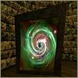
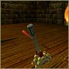
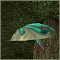
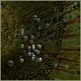
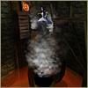

Slime, Lava, and Acid – Alice will lose Sanity if she steps into one of these hazards.
Ice
– The ice in Wonderland is slippery, indeed.
Portals – These kaleidoscopic vortexes transport Alice from place to place in the blink of an eye. Use them whenever they’re available.
Levers
– Pull a lever; it just might expose a cubbyhole or activate an important device. To use a lever, approach near to it and press the Use key [Enter].
Jump Mushrooms – Jump Mushrooms allow Alice to exceed her normal jump distance. Simply hop on the top of these glowing Wonderland fungi and Alice will be catapulted up and over. They are tricky, but effective.
Bubbles – These aren’t the playthings young Alice blew from a bubblewand. Alice can use bubbles to replenish air and maintain her Sanity underwater.
Thermals – Use the gentle currents of these warm air thermals to lift Alice to high places. Simply walk out on to one and you’ll notice the effect.
Falling Objects – Boulders, stalactites, and debris can kill. Avoid falling objects.